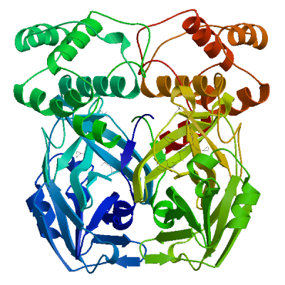

|
|

|
SWISS-MODEL Homology Modelling Report |
Model Building Report
This document lists the results for the homology modelling project "Untitled Project" submitted to SWISS-MODEL workspace on April 3, 2020, 4:53 a.m..The submitted primary amino acid sequence is given in Table T1.
If you use any results in your research, please cite the relevant publications:
- Waterhouse, A., Bertoni, M., Bienert, S., Studer, G., Tauriello, G., Gumienny, R.,
Heer, F.T., de Beer, T.A.P., Rempfer, C., Bordoli, L., Lepore, R., Schwede, T.
SWISS-MODEL: homology modelling of protein structures and complexes.
Nucleic Acids Res. 46(W1), W296-W303 (2018).


- Guex, N., Peitsch, M.C., Schwede, T. Automated
comparative protein structure modeling with SWISS-MODEL and
Swiss-PdbViewer: A historical perspective. Electrophoresis 30,
S162-S173 (2009).
- Bienert, S., Waterhouse, A., de Beer, T.A.P., Tauriello, G., Studer,
G., Bordoli, L., Schwede, T. The SWISS-MODEL Repository - new features and
functionality. Nucleic Acids Res. 45, D313-D319 (2017).
- Studer, G., Rempfer, C., Waterhouse, A.M.,
Gumienny, G., Haas, J., Schwede, T. QMEANDisCo - distance constraints
applied on model quality estimation. Bioinformatics 36, 1765-1771 (2020).
- Bertoni, M., Kiefer, F., Biasini, M., Bordoli, L.,
Schwede, T. Modeling protein quaternary structure of homo- and
hetero-oligomers beyond binary interactions by homology. Scientific
Reports 7 (2017).
Results
The SWISS-MODEL template library (SMTL version 2020-04-01, PDB release 2020-03-27) was searched with BLAST (Camacho et al.) and HHBlits (Remmert et al.) for evolutionary related structures matching the target sequence in Table T1. For details on the template search, see Materials and Methods. Overall 246 templates were found (Table T2).
Models
The following model was built (see Materials and Methods "Model Building"):
Model #01 |
File | Built with | Oligo-State | Ligands | GMQE | QMEAN |
|---|---|---|---|---|---|---|
|  | PDB | ProMod3 3.0.0 | homo-dimer (matching prediction) |
1 x GLY: GLYCINE;
2 x O6K: ~{tert}-butyl ~{N}-[1-[(2~{S})-3-cyclopropyl-1-oxidanylidene-1-[[(2~{S},3~{R})-3-oxidanyl-4-oxidanylidene-1-[(3~{S})-2-oxidanylidenepyrrolidin-3-yl]-4-[(phenylmethyl)amino]butan-2-yl]amino]propan-2-yl]-2-oxidanylidene-pyridin-3-yl]carbamate; |
0.99 | 0.45 |
|
|
| Template | Seq Identity | Oligo-state | QSQE | Found by | Method | Resolution | Seq Similarity | Range | Coverage | Description |
|---|---|---|---|---|---|---|---|---|---|---|
| 6y2g.1.A | 100.00 | homo-dimer | 0.94 | HHblits | X-ray | 2.20Å | 0.62 | 1 - 301 | 1.00 | SARS-CoV-2 (2019-nCoV) main protease |
Included Ligands
| Ligand | Description |
|---|---|
| 1 x GLY | GLYCINE |
| 2 x O6K | ~{tert}-butyl ~{N}-[1-[(2~{S})-3-cyclopropyl-1-oxidanylidene-1-[[(2~{S},3~{R})-3-oxidanyl-4-oxidanylidene-1-[(3~{S})-2-oxidanylidenepyrrolidin-3-yl]-4-[(phenylmethyl)amino]butan-2-yl]amino]propan-2-yl]-2-oxidanylidene-pyridin-3-yl]carbamate |
Target SGFRKMAFPSGKVEGCMVQVTCGTTTLNGLWLDDVVYCPRHVICTSEDMLNPNYEDLLIRKSNHNFLVQAGNVQLRVIGH
6y2g.1.A SGFRKMAFPSGKVEGCMVQVTCGTTTLNGLWLDDVVYCPRHVICTSEDMLNPNYEDLLIRKSNHNFLVQAGNVQLRVIGH
Target SMQNCVLKLKVDTANPKTPKYKFVRIQPGQTFSVLACYNGSPSGVYQCAMRPNFTIKGSFLNGSCGSVGFNIDYDCVSFC
6y2g.1.A SMQNCVLKLKVDTANPKTPKYKFVRIQPGQTFSVLACYNGSPSGVYQCAMRPNFTIKGSFLNGSCGSVGFNIDYDCVSFC
Target YMHHMELPTGVHAGTDLEGNFYGPFVDRQTAQAAGTDTTITVNVLAWLYAAVINGDRWFLNRFTTTLNDFNLVAMKYNYE
6y2g.1.A YMHHMELPTGVHAGTDLEGNFYGPFVDRQTAQAAGTDTTITVNVLAWLYAAVINGDRWFLNRFTTTLNDFNLVAMKYNYE
Target PLTQDHVDILGPLSAQTGIAVLDMCASLKELLQNGMNGRTILGSALLEDEFTPFDVVRQCSGVTFQ
6y2g.1.A PLTQDHVDILGPLSAQTGIAVLDMCASLKELLQNGMNGRTILGSALLEDEFTPFDVVRQCSGVTFQ
Target SGFRKMAFPSGKVEGCMVQVTCGTTTLNGLWLDDVVYCPRHVICTSEDMLNPNYEDLLIRKSNHNFLVQAGNVQLRVIGH
6y2g.1.B SGFRKMAFPSGKVEGCMVQVTCGTTTLNGLWLDDVVYCPRHVICTSEDMLNPNYEDLLIRKSNHNFLVQAGNVQLRVIGH
Target SMQNCVLKLKVDTANPKTPKYKFVRIQPGQTFSVLACYNGSPSGVYQCAMRPNFTIKGSFLNGSCGSVGFNIDYDCVSFC
6y2g.1.B SMQNCVLKLKVDTANPKTPKYKFVRIQPGQTFSVLACYNGSPSGVYQCAMRPNFTIKGSFLNGSCGSVGFNIDYDCVSFC
Target YMHHMELPTGVHAGTDLEGNFYGPFVDRQTAQAAGTDTTITVNVLAWLYAAVINGDRWFLNRFTTTLNDFNLVAMKYNYE
6y2g.1.B YMHHMELPTGVHAGTDLEGNFYGPFVDRQTAQAAGTDTTITVNVLAWLYAAVINGDRWFLNRFTTTLNDFNLVAMKYNYE
Target PLTQDHVDILGPLSAQTGIAVLDMCASLKELLQNGMNGRTILGSALLEDEFTPFDVVRQCSGVTFQ
6y2g.1.B PLTQDHVDILGPLSAQTGIAVLDMCASLKELLQNGMNGRTILGSALLEDEFTPFDVVRQCSGVTFQ
Materials and Methods
Template Search
Template search with BLAST and HHBlits has been performed against the SWISS-MODEL template library (SMTL, last update: 2020-04-01, last included PDB release: 2020-03-27).
The target sequence was searched with BLAST against the primary amino acid sequence contained in the SMTL. A total of 124 templates were found.
An initial HHblits profile has been built using the procedure outlined in (Remmert et al.), followed by 1 iteration of HHblits against NR20. The obtained profile has then be searched against all profiles of the SMTL. A total of 192 templates were found.
Template Selection
For each identified template, the template's quality has been predicted from features of the target-template alignment. The templates with the highest quality have then been selected for model building.
Model Building
Models are built based on the target-template alignment using ProMod3. Coordinates which are conserved between the target and the template are copied from the template to the model. Insertions and deletions are remodelled using a fragment library. Side chains are then rebuilt. Finally, the geometry of the resulting model is regularized by using a force field. In case loop modelling with ProMod3 fails, an alternative model is built with PROMOD-II (Guex et al.).
Model Quality Estimation
The global and per-residue model quality has been assessed using the QMEAN scoring function (Studer et al.).
Ligand Modelling
Ligands present in the template structure are transferred by homology to the model when the following criteria are met: (a) The ligands are annotated as biologically relevant in the template library, (b) the ligand is in contact with the model, (c) the ligand is not clashing with the protein, (d) the residues in contact with the ligand are conserved between the target and the template. If any of these four criteria is not satisfied, a certain ligand will not be included in the model. The model summary includes information on why and which ligand has not been included.
Oligomeric State Conservation
The quaternary structure annotation of the template is used to model the target sequence in its oligomeric form. The method (Bertoni et al.) is based on a supervised machine learning algorithm, Support Vector Machines (SVM), which combines interface conservation, structural clustering, and other template features to provide a quaternary structure quality estimate (QSQE). The QSQE score is a number between 0 and 1, reflecting the expected accuracy of the interchain contacts for a model built based a given alignment and template. Higher numbers indicate higher reliability. This complements the GMQE score which estimates the accuracy of the tertiary structure of the resulting model.
References
- BLAST
Camacho, C., Coulouris, G., Avagyan, V., Ma, N., Papadopoulos, J., Bealer, K., Madden, T.L. BLAST+: architecture and applications. BMC Bioinformatics 10, 421-430 (2009).

- HHblits
Remmert, M., Biegert, A., Hauser, A., Söding, J. HHblits: lightning-fast iterative protein sequence searching by HMM-HMM alignment. Nat Methods 9, 173-175 (2012).
Table T1:
Primary amino acid sequence for which templates were searched and models were built.
YKFVRIQPGQTFSVLACYNGSPSGVYQCAMRPNFTIKGSFLNGSCGSVGFNIDYDCVSFCYMHHMELPTGVHAGTDLEGNFYGPFVDRQTAQAAGTDTTI
TVNVLAWLYAAVINGDRWFLNRFTTTLNDFNLVAMKYNYEPLTQDHVDILGPLSAQTGIAVLDMCASLKELLQNGMNGRTILGSALLEDEFTPFDVVRQC
SGVTFQ
Table T2:
| Template | Seq Identity | Oligo-state | QSQE | Found by | Method | Resolution | Seq Similarity | Coverage | Description |
|---|---|---|---|---|---|---|---|---|---|
| 6y2g.1.B | 100.00 | homo-dimer | 0.94 | HHblits | X-ray | 2.20Å | 0.62 | 1.00 | SARS-CoV-2 (2019-nCoV) main protease |
| 6y2g.1.A | 100.00 | homo-dimer | 0.94 | HHblits | X-ray | 2.20Å | 0.62 | 1.00 | SARS-CoV-2 (2019-nCoV) main protease |
| 6m03.1.A | 100.00 | homo-dimer | 0.94 | HHblits | X-ray | 2.00Å | 0.62 | 1.00 | SARS-CoV-2 main protease |
| 6lu7.1.B | 100.00 | homo-dimer | 0.92 | HHblits | X-ray | 2.16Å | 0.62 | 1.00 | SARS-CoV-2 main protease |
| 5rf9.1.B | 100.00 | homo-dimer | 0.89 | HHblits | X-ray | 1.43Å | 0.62 | 1.00 | main protease |
| 6w63.1.B | 100.00 | homo-dimer | 0.88 | HHblits | X-ray | 2.10Å | 0.62 | 1.00 | Main protease |
| 2a5i.1.A | 96.08 | homo-dimer | 0.86 | HHblits | X-ray | 1.88Å | 0.61 | 1.00 | 3C-like peptidase |
| 1z1i.1.A | 96.08 | monomer | - | HHblits | X-ray | 2.80Å | 0.61 | 1.00 | 3C-like proteinase |
The table above shows the top 8 filtered templates. A further 183 templates were found which were considered to be less suitable for modelling than the filtered list.
4u0y.1.D, 2p5v.1.A, 2op9.1.B, 2ev6.1.A, 5nh0.1.A, 2hyf.3.D, 3f9h.1.A, 4u0y.1.A, 2p1q.1.A, 2p6s.1.D, 2p6t.1.G, 2heo.1.B, 3ea8.1.A, 5hyw.2.B, 4wmd.1.B, 5hzg.2.C, 2vj1.1.B, 4ylu.1.B, 2p5v.1.C, 5zqg.1.B, 4hi3.1.B, 4xfq.1.A, 3ogl.1.A, 2p6s.1.B, 2z9j.1.B, 3c6n.1.A, 2f5c.1.A, 5b6o.1.B, 2pwx.1.A, 4yo9.1.B, 3c6p.1.A, 1fqv.1.B, 5nh0.1.B, 1j75.1.A, 2op9.1.A, 4xfq.1.B, 3iwm.1.H, 5vzu.1.A, 3tlo.1.A, 4zro.1.A, 2k7x.1.A, 4rsp.2.A, 5gwy.1.B, 4kmf.1.A, 4f49.1.A, 3l2o.1.A, 2bx3.1.B, 2q6d.1.A, 2q6g.1.A, 1z1j.1.A, 1lvo.2.B, 3v7d.2.A, 3mks.2.A, 1qwg.1.A, 3c6o.1.A, 3m3v.1.A, 3vb3.1.A, 1lvo.1.B, 6jij.2.A, 4hi3.1.A, 3f9h.1.B, 3f9g.1.A, 2v79.1.A, 5kvr.1.A, 4wme.1.A, 4wmf.2.C, 1uk3.1.B, 2alv.1.A, 3aw1.1.B, 5gwz.1.A, 2qiq.1.A, 3sna.1.A, 3ea9.1.A, 4mds.1.A, 5hyo.1.B, 5zqg.1.A, 3f9g.1.B, 5gwy.1.A, 2p6s.1.F, 3ea7.1.B, 2qc2.1.A, 6jij.1.A, 4zuh.1.B, 5ibk.2.B, 2heo.1.A, 2p6t.1.H, 1wi9.1.A, 5hzg.1.C, 3v7d.1.A, 4tww.1.B, 3ebn.1.A, 2p1n.3.A, 4ylu.1.A, 3m3v.1.B, 3d23.1.A, 2l54.1.A, 2ma3.1.A, 2a5k.1.A, 2p5v.1.D, 1uj1.1.B, 4yog.1.B, 2yna.1.A, 2z9j.1.A, 2bx4.1.A, 5c3n.1.B, 3ebn.2.A, 5wkj.1.A, 6brq.2.B, 6bro.2.B, 3iwm.1.G, 2amd.1.B, 3aw1.1.A, 5hyw.1.B, 1uk3.1.A, 3m3s.1.A, 4zro.1.B, 1z1j.1.B, 2q6d.2.A, 4yxy.1.A, 1p9s.1.A, 2qcy.1.A, 5gk9.1.A, 1nex.1.A, 5eu8.1.A, 1q2w.1.A, 2gtb.1.A, 5ibk.1.A, 4yoi.1.A, 3d62.1.A, 2ev6.1.B, 2zu2.1.A, 2hyf.3.C, 4zuh.1.A, 2q6f.1.B, 2q6g.1.B, 5v4b.1.A, 2v79.1.B, 6brp.2.B, 2vj1.1.A, 2hyf.3.B, 2xvc.1.A, 2q6d.1.B, 2gt8.1.A, 6mak.1.A, 6brp.1.B, 3f9e.1.A, 1lvo.3.B, 6fv1.1.A, 2duc.1.A, 4u0y.1.B, 2liz.1.A, 4wmd.1.A, 2hyg.1.A, 3d23.1.C, 3iwm.1.E, 5b6o.1.A, 6p7v.1.B, 6brq.1.B, 2c3s.1.A, 3mks.3.A, 3e91.1.A, 3m3t.1.A, 2amp.1.A, 4zro.1.C, 2f5d.1.B, 3iwm.1.F, 1q2w.1.B, 1lvo.1.A, 1lvo.2.A, 2p6t.1.E, 2amd.1.A, 5nh0.1.C, 2f5e.1.A, 4zro.1.D, 5hyo.1.A, 5c3n.1.A, 2hyf.3.A, 3fzd.1.A, 3tlo.1.B, 1z67.1.A, 2ovr.1.A, 6maj.1.A, 2qc2.1.B